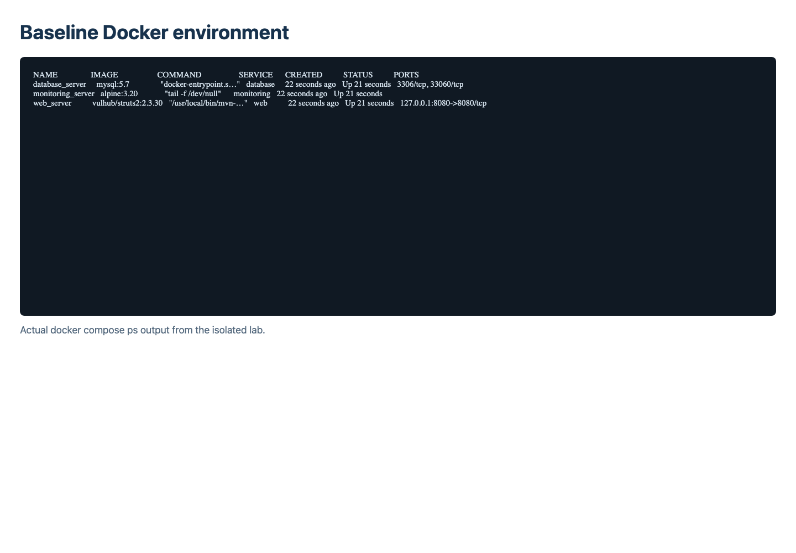
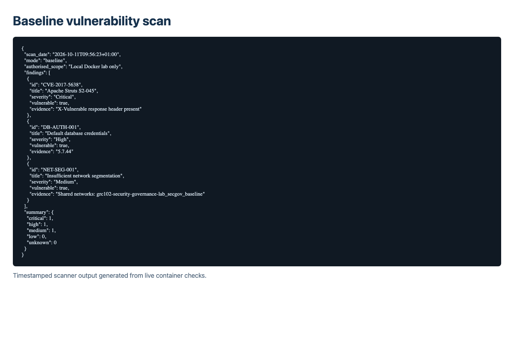
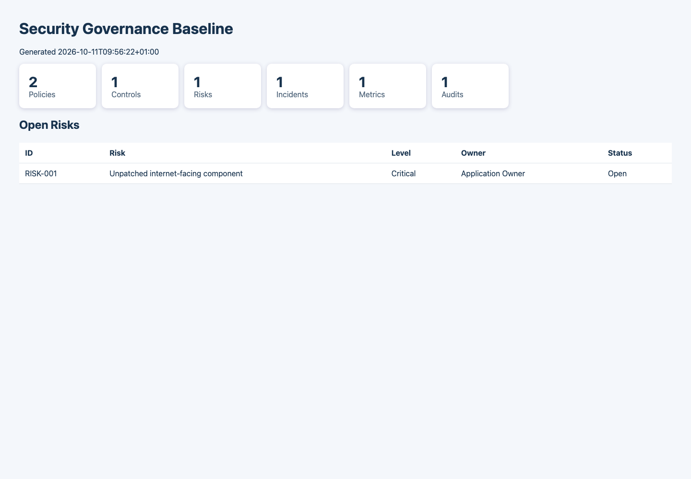
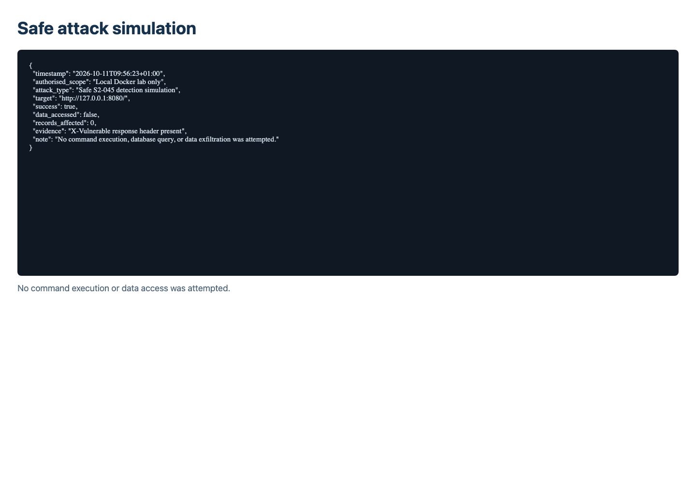
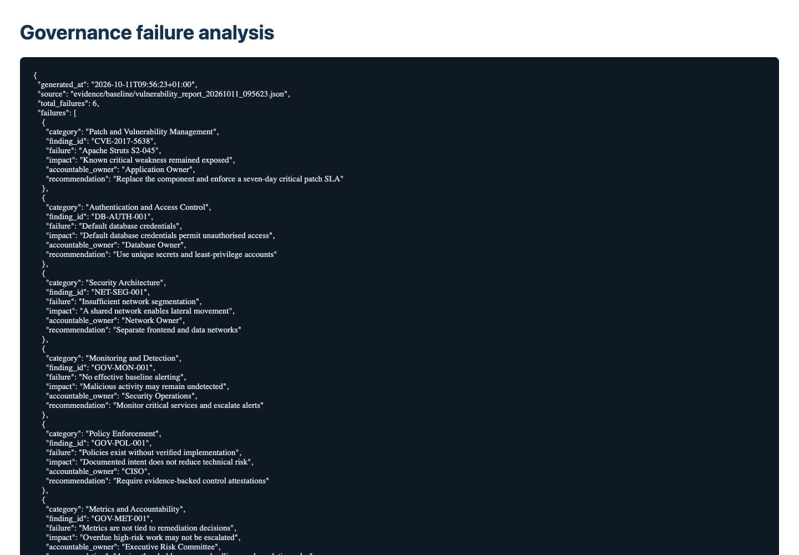
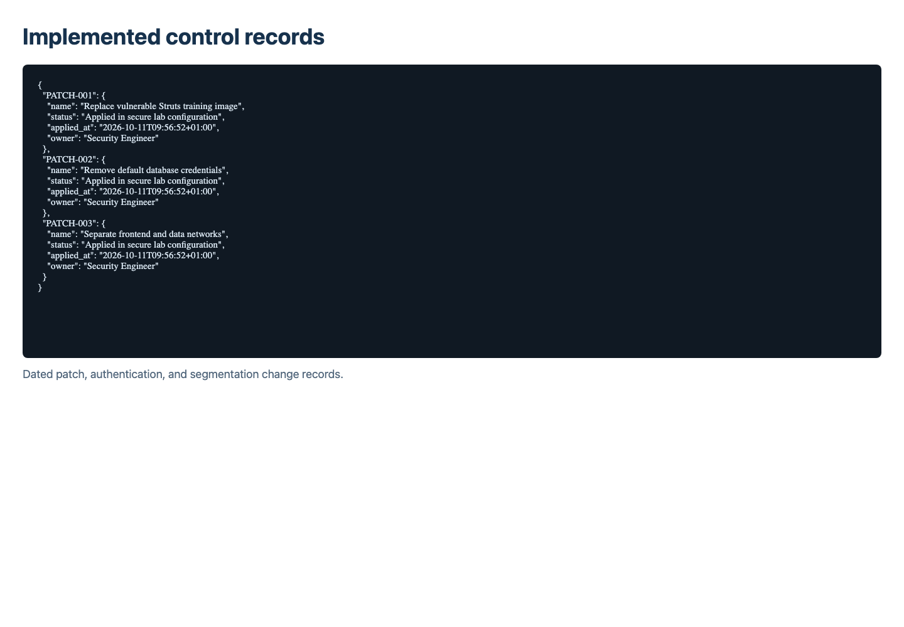
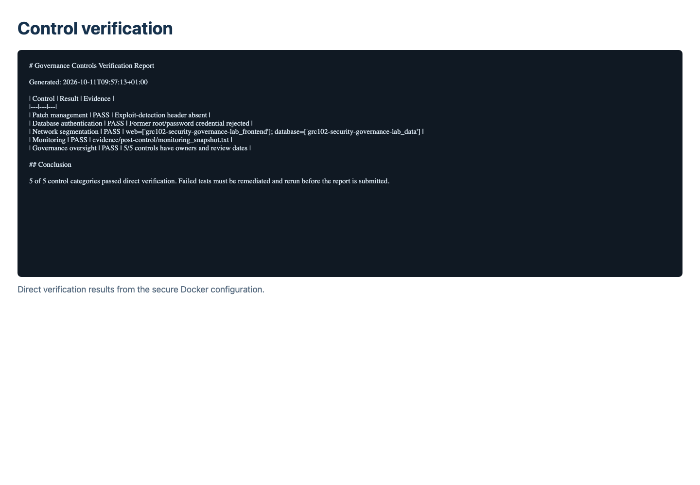
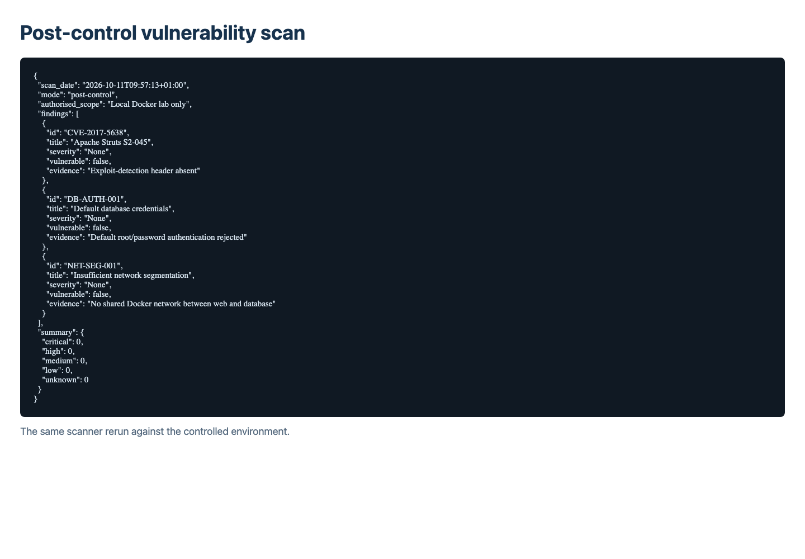
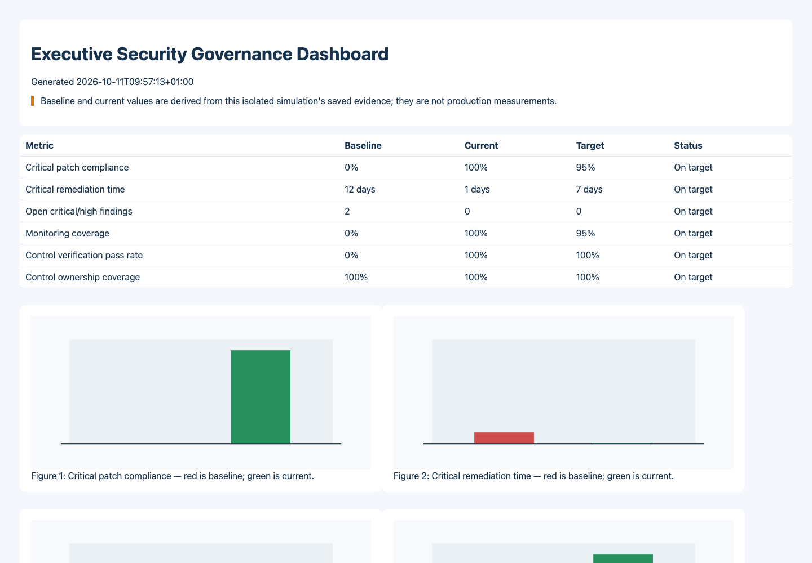

The baseline combines an intentionally vulnerable Struts training service, a database containing three explicitly synthetic rows, and a monitoring container on one shared network. Loopback-only port binding prevents external exposure. This models delayed patching, weak authentication, and insufficient segmentation while limiting the activity to the authorised host.



The safe request confirmed whether the S2-045 response behaviour was present; it did not execute operating-system commands or access the database. The analysis identified failures in remediation, access control, architecture, monitoring, policy enforcement, and executive accountability. These mirror governance lessons from Equifax while avoiding a claim that the small simulation reproduces the scale or impact of that incident.


The secure configuration replaces the vulnerable training service, removes default credentials, keeps the database off host ports, and separates frontend and internal data networks. Monitoring captures dated service evidence, while the oversight register assigns owners, review dates, thresholds, and escalation routes. Verification uses direct container and HTTP checks rather than relying solely on implementation status.



The dashboard derives its current state from the saved scan and control-verification evidence. Its metrics cover patching, remediation time, unresolved high-risk findings, monitoring, test results, and ownership. Targets make exceptions visible and connect operational evidence to decisions required from management and the board.

Evidence-backed reporting helps leadership distinguish implemented controls from stated intent. Named owners and escalation thresholds make overdue risk actionable, while repeatable before-and-after tests support auditability and continuous oversight.